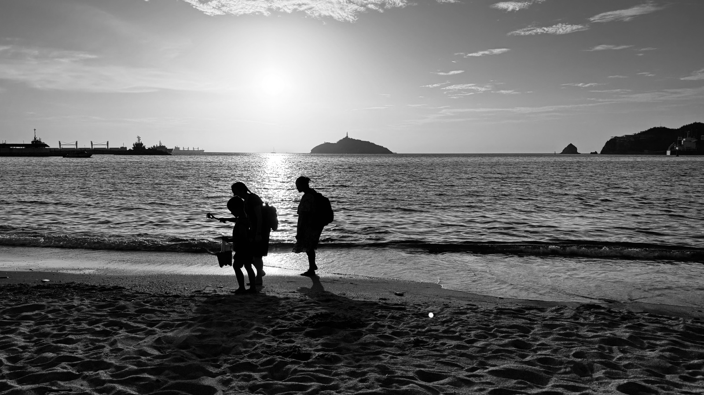

Welcome to our blog page! Sure, this may be a little old-fashioned for some people, but it seems like a little fun to share this with all of our followers. What is it like to be a missionary on the field? Are things very hard? Is it just like living in the States? These are some of the questions that many of you may have, and I hope that through this blog, some of those questions might be answered.
I want to be upfront that some things may seem like complaints, but they're not intended to be. We want to show the reality of some things — but we have our Lord and Savior walking right beside us, and we are content with everything He has given us.
Still, we can't hide the fact that living in a different country means giving up some things we were used to in the States or in Mexico. We had our share of dangers in Mexico, but we never had to battle scorpions there — and we've already found three of them hiding out under stuff in our house here in Colombia! In the US and in Mexico, we didn't have to worry about dengue fever, but Neal caught it in our first couple of months here. These are just some of the realities you face on the mission field.
We walk everywhere we go, or take public transportation, because we didn't have enough money to buy a vehicle when we arrived. And honestly? It's been good for us. I've lost over 35 pounds since being here just from all the walking! The weather is over 90 degrees every single day, and some days it feels even worse because of the humidity. We're constantly sweating everywhere in the house — except in our room with the air conditioner. (No, we don't keep it running all day; the electricity bill can climb to $300 a month if we aren't careful!) Electricity here is pretty expensive, but water and gas are cheap, so our stove is gas-operated. At least we don't need a heater. LOL.

So some may ask, "Why in the world would you still be living there, then?" Well, if you just looked at the circumstances, any missionary would leave the field after only a short time. But the other day, I got the opportunity to teach a group of 20–25 kids about Adam and Eve. After the lesson, three kids got saved. Two weeks before, I had taught on Noah and the Ark to a group of almost 40 kids, and three more kids were saved that day as well.
Also, there are plenty of beautiful places to see close by. The ocean is only 20 minutes away on foot, and it is so relaxing to sit down at the beach, listen to the waves, and watch the kids having fun. The beauty of God's creation is such a wonderful thing to behold!
Thank you for following along. We can't wait to share more with you. — The Goodall Family